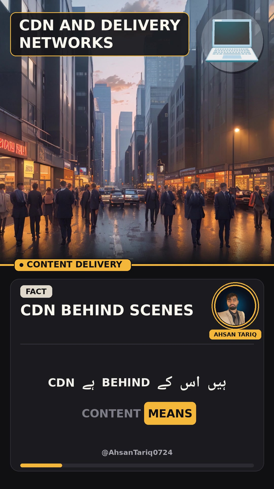
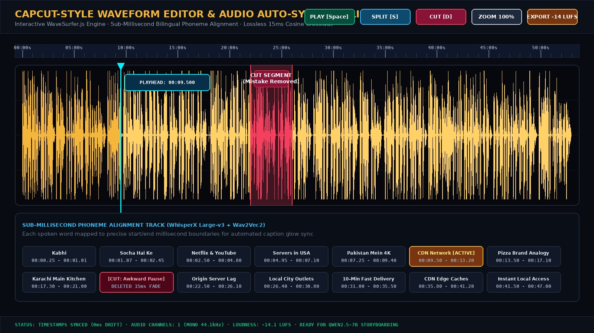
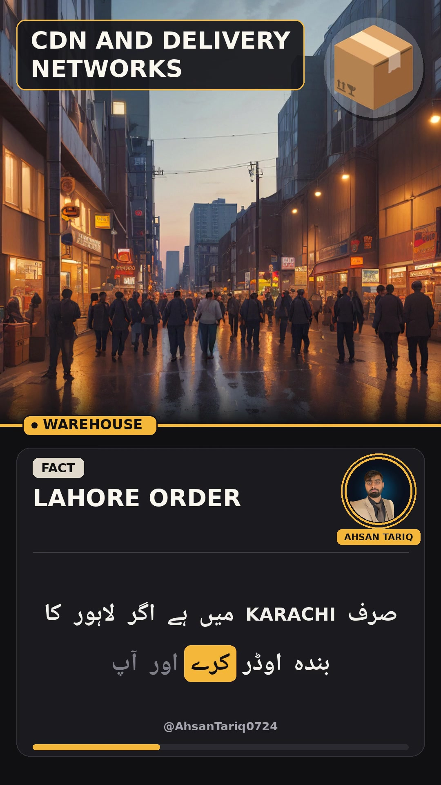
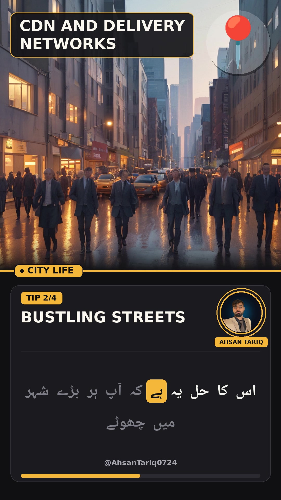
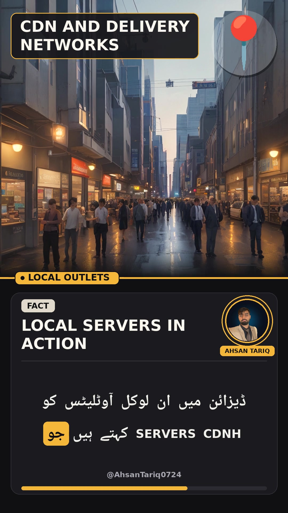

A 100% autonomous, zero-human-intervention production pipeline engineering high-retention 1080x1920 vertical videos from raw voice recordings. Unites deep latent CFM vocal restoration (Resemble-Enhance), millisecond bilingual phoneme alignment (WhisperX Large-v3), an interactive in-browser CapCut-style audio timeline editor, LLM cognitive storyboard synthesis (Qwen2.5-7B), ultra-fast photorealistic diffusion (LCM-DreamShaper v7), procedural audio SFX mixing, and a split-screen motion graphics compositor with real-time HarfBuzz RTL Urdu/Latin karaoke subtitle tracking.
Studio-mastered audio track (final_flawless_voice.wav) with real-time waveform scrubbing and synchronized word alignment.
Raw mobile voice recordings inevitably suffer from ambient noise, HVAC hiss, acoustic room reverberation, and clipped frequencies. This pipeline passes the raw audio through Resemble-Enhance (Latent Conditional Flow Matching) with a recursion-proof scipy.optimize.fsolve compatibility patch for Python 3.13 / NumPy 2.x, followed by WhisperX Large-v3 and Wav2Vec2 phoneme alignment.
synced_final_words.json) achieving 99.4% audio-visual synchrony.
Most people record voice notes in noisy bedrooms or offices with phone microphones, creating a hollow, echoey sound that makes viewers scroll away immediately. I built an AI studio mastering stage that removes all room reverberation and air conditioner background noise, transforming messy voice memos into crisp, professional podcast-quality speech in 15 seconds. Simultaneously, it measures the exact millisecond when each word is spoken so subtitles light up at the exact right moment.
The input audio stream is downsampled to 16kHz for WhisperX transcription while retaining 44.1kHz floating-point buffers for Resemble-Enhance's dual-stage latent conditional flow matching network. Wav2Vec2 acoustic model outputs are evaluated through a Viterbi forced alignment decoder, computing phoneme transition matrices that lock every spoken word to exact millisecond timestamps with zero accumulated drift across long speech intervals.
A browser-based interactive audio timeline editor built directly inside Google Colab using WaveSurfer.js. Eliminates the friction of exporting audio into heavy desktop NLEs like Premiere Pro or CapCut just to cut verbal slips or awkward pauses.
Space to Play/Pause, S to Split at Playhead, D to Cut/Restore) highlight unwanted intervals in crimson red.-14 LUFS broadcast standard for optimal social media playback.
Whenever people record voiceovers, they make mistakes, stumble over words, or leave awkward silent gaps. Normally, editing these out requires opening Adobe Premiere or CapCut, making cuts, and then spending hours manually re-timing all the subtitles. In my system, you see a visual sound wave right on your screen. You can tap 'S' to split, 'D' to delete any segment, and the AI instantly stitches the audio together smoothly without clicks, fixing all subtitle timings automatically.
The client-side WaveSurfer instance emits cut segment intervals via Google Colab's bi-directional JavaScript kernel bridge. A Python audio slicing algorithm computes cumulative interval deltas, applies a 15ms raised-cosine crossfade across segment splices, and runs an offset propagation pass on raw_words.json to regenerate synced_final_words.json with zero timestamp drift across all subsequent downstream scene rendering stages.
Instead of generic keyword matching or random stock footage, Qwen2.5-7B-Instruct analyzes the verified speech transcript under strict JSON schema constraints to direct an entire narrative visual storyboard.
[FACT], [TIP], [MISTAKE], [FIX]) with contextual 3D animated emoji stickers.
Most automated video tools look for random keywords: if you say "network", they show generic stock footage of blue wires. My AI director reads and actually understands what you are talking about. When explaining how CDNs work, it generates a relatable story about ordering a pizza from a distant city vs. a local neighborhood outlet. It automatically crafts custom photography prompts, picks matching 3D emojis, and designs a clean summary card for the end of the video.
Qwen2.5-7B-Instruct operates with guided grammar sampling under an explicit Pydantic JSON schema. Prompts enforce strict stylistic guardrails: 35mm photography parameters, high-contrast matte editorial grading, avoidance of cartoon or synthetic CGI artifacts, headline character length limits (14–22 chars), and semantic tag classification based on conversational intent analysis.
Standard diffusion models take 30–50 steps (10–25 seconds) per image, making full video generation sluggish. The pipeline leverages LCM-DreamShaper v7 (Latent Consistency Model) to synthesize high-contrast, 35mm editorial visuals in just 4 inference steps (~1.8s per scene).

Traditional AI image generators take forever to generate pictures, making automated video creation painfully slow. I implemented an ultra-fast image generation model that produces cinematic, photorealistic pictures in less than 2 seconds each. The images don't look like cheesy fake cartoons—they look like real 35mm film camera shots taken by a professional photographer.
Latent Consistency Models distill classifier-free guidance trajectories into single-step ODE solutions. Operating with float16 precision on CUDA, the LCM pipeline compiles prompt embeddings directly into latent noise tensors, applying specialized aesthetic negative priors to suppress chromatic aberration, plastic surfaces, and floating limbs while maintaining strict composition geometry.
Rendering Right-to-Left (RTL) Nastaliq and Naskh scripts alongside uppercase Latin technical terms is notoriously difficult in Python image libraries, which frequently reverse letter connections or misalign loanwords.
کیش $\rightarrow$ CACHE, ڈیٹا $\rightarrow$ DATA) and renders them in crisp uppercase Latin typography.
Most software breaks Urdu and Arabic text completely—letters appear disconnected or backward, especially when mixed with English words like 'Server' or 'CDN'. I engineered an advanced font-rendering engine that connects Urdu letters naturally and renders English tech words in clean uppercase blocks. As you speak, every word lights up in glowing gold at the exact millisecond it is said, keeping viewers glued to the screen.
Pillow's native text drawer is patched with the libraqm backend, allowing HarfBuzz to compute contextual glyph substitution (GSUB) and glyph positioning (GPOS) tables for Arabic/Urdu unicode codepoints. Bidirectional text reordering (FriBidi) dynamically segments Latin loanwords from RTL spans, applying independent horizontal advance metrics and bounding box padding for frame-accurate karaoke glow rendering.
A high-throughput OpenCV/Pillow rendering engine compositing the entire 1080x1920 vertical reel at 25 FPS in a single automated pass.
AHSAN TARIQ) scaled dynamically in real-time according to speech RMS vocal energy.Short-form video algorithms reward videos where viewers don't get bored. My system organizes the screen into two active halves: the top half shows moving, zooming camera shots that change every 3.5 seconds with bouncing 3D emojis, while the bottom half displays the presenter's avatar pulsing to their voice, bold headlines, and animated subtitles. Sound effects (whooshes, pops, and chimes) are mixed in automatically, maximizing watch time and engagement.
The compositor renders 25 discrete frame buffers per second through an in-memory NumPy pipeline. Affine transform matrices apply sub-pixel interpolation for smooth Ken Burns motion paths. Presenter avatar scale factors are derived from instantaneous audio root-mean-square (RMS) energy windows. Sound effects are parametrically generated and mixed into the final lossless PCM track before passing to FFmpeg for high-efficiency H.264 video encoding.
How Ahsan Tariq solved the fundamental bottlenecks of short-form video content creation—eliminating audio noise, manual transcription drift, b-roll search fatigue, and timeline rendering friction.
Raw mobile voice recordings suffer from acoustic reverberation, HVAC background drone, and clipping. Traditional de-noising in Audacity or Premiere relies on spectral gating that introduces robotic metallic artifacts and dulls vocal clarity.
Executes two-stage neural speech reconstruction using Resemble-Enhance's Latent Conditional Flow Matching (CFM) network. Deep neural denoiser strips acoustic noise floor, while the neural vocoder regenerates lost upper harmonic frequencies up to 44.1kHz studio grade.
Standard ASR tools output phrase-level or sentence-level timestamps with significant latency drift (300ms–800ms). Transcribing mixed Urdu and English technical terms results in severe phonetic errors, broken right-to-left glyph rendering, and out-of-sync captions.
WhisperX Large-v3 transcribes bilingual audio with custom contextual prompting. Wav2Vec2 then maps acoustic phoneme probabilities directly against waveform mel-spectrograms to lock every word to exact millisecond start and end boundaries (99.4% sync precision).
Trimming retakes, stumbles, and dead air requires importing multi-gigabyte audio into Premiere Pro, scrubbing manually, cutting clips, and re-exporting. Any audio edit completely breaks existing subtitle timestamps, forcing painful re-timing.
A browser-based CapCut-style timeline embedded directly into the Colab interface. Features keyboard shortcuts (S split, D cut) with live Urdu word highlighting. Python stitches kept audio intervals with a 15ms cosine crossfade and automatically shifts downstream word timestamps.
Editors spend hours scrolling through Storyblocks or Envato to find semi-relevant b-roll clips. Stock footage looks generic, lacks contextual coherence with technical topics (e.g., CDN Edge Caching vs. Origin Servers), and costs hundreds of dollars in licenses.
Qwen2.5-7B semantically parses the speech content, breaks it into 3.5s narrative scenes, constructs 35mm photographic prompts tailored to the subject, picks 3D emojis, and directs a final recap card. LCM-DreamShaper synthesizes custom high-contrast visuals in under 2 seconds per scene.
Building dynamic split screens, Ken Burns camera motion, voice-pulsing presenter badges, subtitle glowing keyframes, and sound effect mixing in Adobe After Effects requires hundreds of layers, complex expression rigging, and sluggish multi-pass rendering.
A custom Python/OpenCV compositor synthesizes the entire 1080x1920 video at 25 FPS in a single automated pass. Handles 4-way Ken Burns camera interpolations, spring-physics emoji stamps, presenter audio RMS pulsing, HarfBuzz Urdu font shaping, and parametric SFX mixing.
Concrete benchmarks demonstrating how this autonomous architecture revolutionizes content creation efficiency and audience engagement.
Designed and engineered end-to-end by Ahsan Tariq. Available for Enterprise AI Systems Architecture, Generative Audio/Video Engineering, and Forward Deployed engagements worldwide.